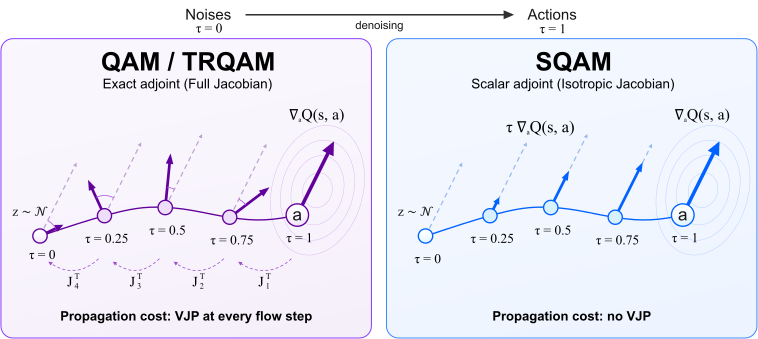
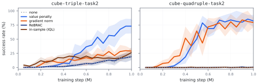
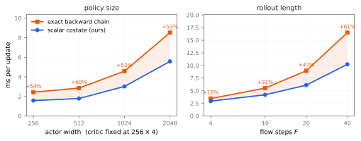

Put fruit in the pot and close the lid
EXPO-FT offline2online (Failure)
SQAM offline2online (Success)
TL;DR — SQAM substantially reduces computation by replacing the costly vector–Jacobian products in adjoint matching with a closed-form scalar adjoint. Combined with a penalty on value overestimation, SQAM achieves state-of-the-art performance in OGBench offline-to-online experiments.

A flow policy generates its action over many flow steps, while the critic only tells us how good the final action is. Using this final-action feedback is nontrivial, as naïve backpropagation through time (BPTT) can be unstable. Adjoint matching provides a theoretically grounded way to directly update the flow model with this value information.
The challenge is computational cost. However, it requires a vector–Jacobian product through the policy at every step to solve the lean adjoint ODE:
These per-step vector–Jacobian products make adjoint matching increasingly costly as policy size and the number of flow steps grow.
To reduce the cost of vector–Jacobian products in adjoint matching, we analyzed the velocity Jacobian’s behavior. This analysis revealed that the batch-averaged Jacobian of a pretrained flow policy is strongly dominated by its diagonal.

Motivated by this structure, we approximate the Jacobian by a scalar multiple of the identity:
Under this approximation, the lean adjoint ODE admits a closed-form solution. SQAM drops the Jacobian-dependent factor and uses the scalar adjoint:
One critic gradient at the sampled action; no policy vector–Jacobian product at any flow step.
We find that the choice of value learning scheme plays an important role since the scalar adjoint update depends directly on the critic’s gradient at the policy-generated action \(a_\pi\).
SQAM therefore penalizes the critic’s value at the policy-generated action \(\boldsymbol{a_\pi}\) relative to the dataset action \(a_{\mathrm{data}}\):
The penalty acts at the action whose critic gradient drives the scalar adjoint update. The value penalty lifts both cube manipulation domains where the unregularized scalar adjoint struggles, while ReBRAC and the in-sample critic stay near the unregularized baseline.

We evaluate on 50 tasks across 10 domains in OGBench offline and offline-to-online reinforcement learning. The largest offline gains appear on four hard domains.
| Method | AL | AG | HM | HL | Scene | P33 | P44 | C2 | C3 | C4 | All 50 |
|---|---|---|---|---|---|---|---|---|---|---|---|
| FQL | 38 | 2 | 74 | 2 | 70 | 25 | 9 | 44 | 7 | 9 | 28 |
| CGQL-L | 48 | 7 | 57 | 6 | 58 | 0 | 0 | 55 | 0 | 1 | 23 |
| DSRL | 53 | 1 | 53 | 1 | 80 | 100 | 61 | 72 | 34 | 9 | 46 |
| IFQL | 29 | 12 | 93 | 30 | 36 | 64 | 42 | 9 | 24 | 6 | 35 |
| QAM | 62 | 29 | 64 | 4 | 64 | 15 | 1 | 71 | 19 | 18 | 35 |
| QAM-E | 86 | 6 | 60 | 4 | 63 | 89 | 54 | 71 | 11 | 9 | 45 |
| TRQAM | 89 | 41 | 84 | 36 | 79 | 100 | 99 | 81 | 50 | 19 | 68 |
| SQAM | 91 | 62 | 94 | 54 | 79 | 100 | 85 | 58 | 72 | 54 | 75 |
Mean success rate (%); each domain contains five tasks. Abbreviations follow the manuscript's Table 1. Standard deviations are reported in the paper.
Each SQAM update removes the policy vector–Jacobian products required at every flow step for exact adjoint propagation. The saving grows with the number of flow steps and remains substantial as the actor becomes larger.

SQAM fine-tunes RLDX-1, a pretrained vision-language-action policy controlling two arms and two 20-DoF dexterous hands. RL fine-tuning acts on a 16-step × 54-DoF sub-chunk over the arm and hand joints. We evaluate three real-world bimanual manipulation tasks.
| Method | Put & Close | Flip Bag | Place Straw |
|---|---|---|---|
| SFT | 4/30 | 15/30 | 7/30 |
| EXPO-FT offline | 5/30 | 8/30 | 0/30 |
| EXPO-FT offline2online | 3/30 | 15/30 | 0/30 |
| SQAM offline | 8/30 | 20/30 | 13/30 |
| SQAM offline2online | 13/30 | 25/30 | 15/30 |
Successful held-out episodes out of 30 per task. SQAM improves over supervised fine-tuning on all three tasks.
This motivates a scalar approximation under which the adjoint admits a closed-form solution.
Since the scalar adjoint directly uses the critic’s gradient at policy-generated actions, the choice of value learning scheme matters.
Together, these ingredients simplify off-policy fine-tuning, improve performance most on the hardest OGBench domains, and extend to a pretrained vision-language-action policy on a real bimanual robot.